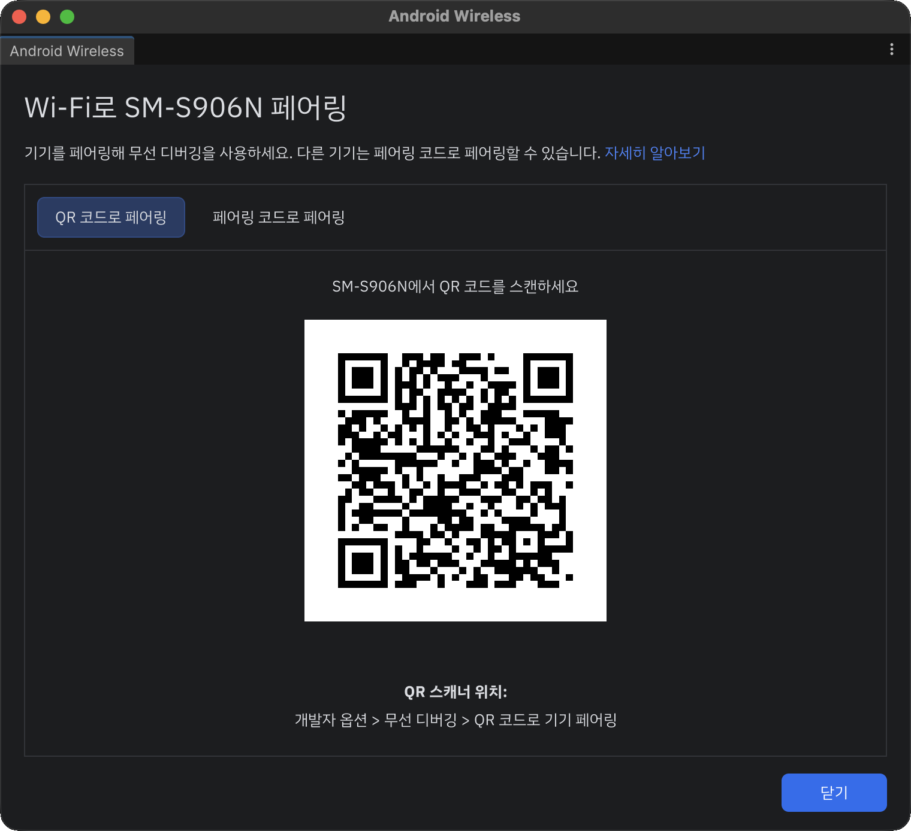

무선 연결 페어링
무선 연결 페어링은 Android 11 이상 기기의 무선 디버깅을 Unity 에디터 안에서 페어링하고 연결하는 에디터 창입니다. Android Studio의 Pair devices over Wi-Fi와 같은 흐름으로 동작하므로, USB 케이블 없이 빌드를 기기에 바로 올릴 수 있습니다.

주요 기능
- 같은 네트워크에서 무선 디버깅이 켜진 기기를 실시간 목록으로 보여 줍니다.
- QR 코드를 스캔하거나 6자리 페어링 코드를 입력해 페어링합니다. 페어링이 끝나면 자동으로 연결합니다.
- 기기마다 ADB Wi-Fi 버전(v1.0 / v2.0)을 표시합니다.
- Platform-Tools가 오래되었으면 창에서 바로 최신 버전을 설치할 수 있습니다.
- Android Studio / Unity 두 가지 테마와 한국어 / English를 지원합니다.